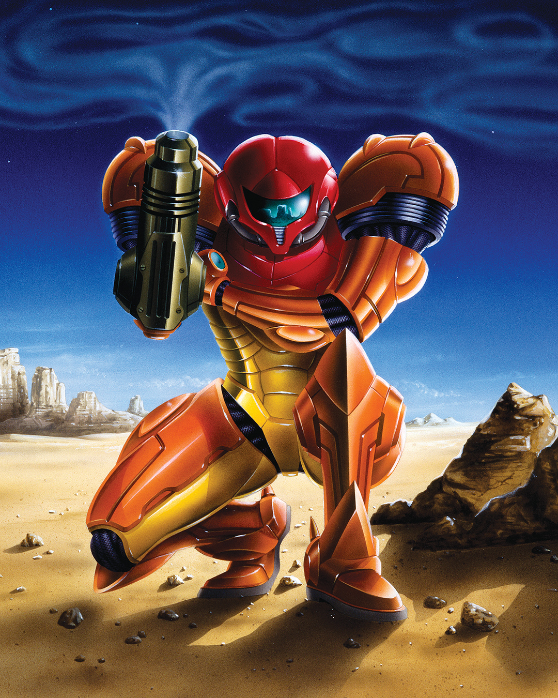
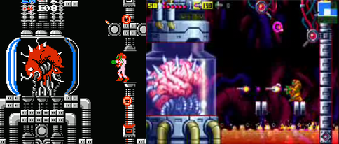
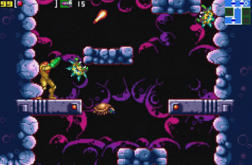
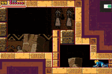

Significance
Metroid was the first game series I ever played that stuck with me after playing it. The games I had played before were the type you’d play for an hour before you move on to something else. Metroid, however, I couldn’t put down. Unlocking new power ups and exploring new and different areas of the planet were so engaging to me. Samus as a character was also so cool to me as a kid. Her armor was unlike anything I had seen in the other games I played; her entire arm was a cannon and she had a visor that completely covered her face. She would never speak, but you knew she wasn’t someone you should mess with by the way she unflinchingly blasts through any hostile organism that crosses her path.Zero Mission
 The exact game that I first played from this series was called Metroid: Zero Mission. It is a remake of the original Metroid game from 1986 on the Nintendo Entertainment System (NES). It was made for the Gameboy Advance in 2004 and not only faithfully translated the original to—at the time—modern graphical standards, but also added completely new content and story (It even had the NES version included on the cartridge!). The original Metroid just had you start the game with no hints as to what to do, nor did it have a map that you could reference to figure out where you were going. Even for the time, it was pretty difficult to play the game all the way to the end due to those factors. So, this remake was perfect for a kid like me who would have no idea where to even begin with the original.
Gameplay
 At the beginning of the game, you land on the planet Zebes and after a quick cutscene, you are immediately left to find your way around. The player is free to explore but many areas are inaccessible without certain power ups or are guarded by a boss enemy. More experienced players can attempt something called a “Sequence Break” where they use their skills and knowledge of the game to reach places that usually wouldn’t be accessible. This is a big reason why these games are so replayable. Your main weapon is the arm cannon, which can be fired infinitely and can be aimed in forwards and diagonally up and down. In order to open doors, you have to shoot them with the appropriate weapon: Blue doors can be opened with all weapons, red doors with missiles, and more as the game progresses. In order to save your progress, you have to find specific save rooms rather than the game automatically doing it for you. This leads the player to either try to take risks and explore further in hopes of finding another save room or be more careful knowing that dying before reaching a save room will lead to loss of progress.
Plot
As this is a remake of an NES game, the story is not too complicated. Samus Aran is a bounty hunter tasked with exterminating all organisms known as Metroids on the planet Zebes. Metroids are parasites that feed on any and all living organisms and drain them of their life energy. On top of dealing with them, she must also take on the space pirates and an organism called “Mother Brain” which controls the facility holding the space pirate collection of metroids. After Samus defeats Mother Brain and eliminates all of the metroids, she escapes the self-destructing facility and takes off in her space ship to leave the planet. This is where the original game ends; however, in Zero Mission, an extra story scenario is added here.
 After Samus successfully escapes planet Zebes, she removes her power suit since the mission has been completed. Suddenly, space pirate ships pursue her and manage to shoot down her ship and she crash lands back down on the surface of the planet. Now, she is left almost defenseless, wielding only a stun gun. Without her power suit or any of the upgrades she had found throughout the game, she now has to infiltrate the space pirate mothership to try and take one of their escape shuttles. This section is more stealth-focused, since Samus’ stun gun cannot harm enemies, the player has to approach encounters more carefully. She has to stay out of sight of surveillance lasers, tripwires, and patrolling space pirates all while making her way throughout the ship. At one point she finds her way back out of the ship and into an ancient temple full of artifacts of the Chozo, the alien race that created the technology for her power suit. Here she undertakes a trial to see if she is still worthy to wield the power suit and prevails. With her powers restored, and new and enhanced abilities, she makes quick work of the remaining space pirates and once again escapes the planet Zebes (for real this time).
| Title | Platform | Have Played |
|---|---|---|
| Metroid | Nintendo Entertainment System | ✅ |
| Metroid II: Return of Samus | Gameboy | ❌ |
| Super Metroid | Super Nintendo Entertainment System | ✅ |
| Metroid Fusion | Gameboy Advance | ✅ |
| Metroid Prime | Gamecube | ✅ |
| Metroid Zero Mission | Gameboy Advance | ✅ |
| Metroid Prime 2: Echoes | Gamecube | ✅ |
| Metroid Prime Pinball | Nintendo DS | ❌ |
| Metroid Prime Hunters | Nintendo DS | Have but never finished |
| Metroid Prime 3: Corruption | Nintendo Wii | ✅ |
| Metroid Prime Trilogy | Nintendo Wii | ✅ |
| Metroid: Other M | Nintendo Wii | ❌ |
| Metroid Prime: Federation Force | Nintendo 3DS | ❌ |
| Metroid: Samus Returns (Metroid 2 remake) | Nintendo 3DS | ✅ |
| Metroid Dread | Nintendo Switch | ✅ |
| Metroid Prime Remastered | Nintendo Switch | ❌ |
| Metroid Prime 4: Beyond | Nintendo Switch 2 | Not yet released |
| Total Games Played | 11 ⁄ 17 | |